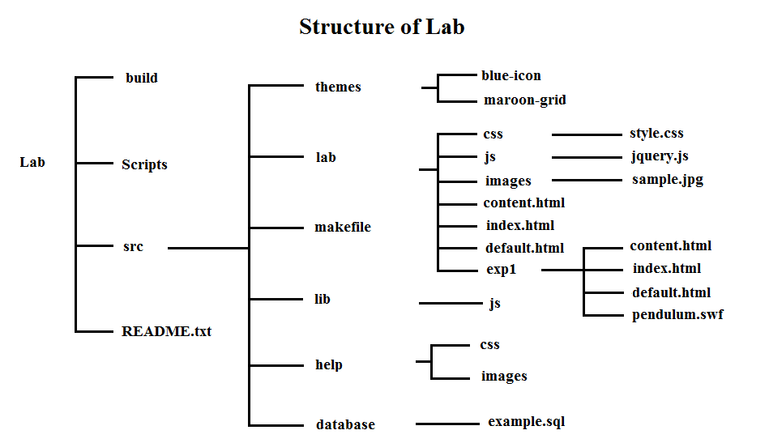
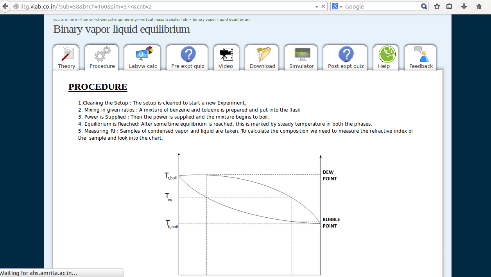

UI 1.0 Toolkit
Table of Contents
1 Using UI 1.0 Toolkit
The UI Toolkit consists of the Virtual Labs User Interface framework. Apart from the Virtual Labs UI 1.0 template, the toolkit also contains helper scripts that extract the content of labs hosted in Collaborator Framework (Amrita format) to UI 1.0 Framework. The objective of using UI 1.0 Toolkit is to standardize the formats of all labs according to the Virtual-labs UI 1.0 framework. The UI 1.0 Toolkit helps you achieve the following:
- Unified look and feel: The UI 1.0 Toolkit offers a uniform user interface for authoring and interacting with the virtual labs.
It also provides the labs a simple and uniform web interface and a homogeneous hosting framework.
- Coding standards: The Toolkit ensures that lab developers follow good programming practices to make the code of the labs efficient
and readable.
- Upgrading widgets and components: The UI 1.0 template makes it easy for lab developers to modify and update widgets and/or components.
- Provision for better versions of template: In future, if advanced versions of the UI template are created,
the lab developers can transfer the lab content automatically as per the new versions.
2 How to Identify the template of your Lab?
Before you start using the UI 1.0 Toolkit, you need to understand the structure of your lab. Your lab may be either in the Collaborative Framework (Amrita Format) or is Unstrcutured (does not follow the UI 1.0 Template). If your lab is in Collaborative Format, then your lab URL should contain sub, brch, sim and cnt. Example (http://iitkgp.vlab.co.in/?sub=39&brch=124&sim=922&cnt=1)
The description of the above url is as follows:
| url format | example |
|---|---|
| sub=39(subjects or domains) | Electrical Engineering |
| brch=124(branch or lab) | Analog Signals, Network and Measurement Laboratory |
| sim=922(experiment) | Verification of Superposition Theorem |
| cnt=1(the breakup of pages under each experiment) | Introduction, Aim, Theory etc |
If your lab does not follow this format then your lab is in Unstructured Format.
3 How to Transform your Lab to the UI 1.0 Template?
As discussed above, your lab may be in either the Collaborative Format (Amrita framework) or unstructured. Depending on the current structure of your lab, you need to follow the steps below to convert your lab.
3.1 Transform Unstructured Labs
In the LIK, go to ui-1.0-toolkit/src/template/src/lab/exp1/content.html. This content.html contains "simple pendulum" experiment by default.
Follow the instructions to transform default experiment into one experiment of your lab.
Step 1: Mention the lab name under header and place your experiment name under article and replace the content accordingly
in each section for Aim, Theory and Procedure etc.
Step 2: Follow the step 1 for all experiments of your lab. List out the experiment names in ui-1.0-toolkit/src/template/src/lab/content.html.
Give links to the listed experiment names.
This is how the html page of the experiment should be structured.

3.1.1 How to Validate that your lab confirms to UI 1.0 template?
Step 1: Based on the operating system, scripts will differ. Therefore, check the scripts being used. If the operating system used is "CentOS",
use ui-1.0-toolkit/scripts/centos-scripts otherwise use ui-1.0-toolkit/scripts/ubuntu-scripts scripts.
Step 2: Copy the scripts from the desired template (i.e. ubuntu-template or centos-template) and paste inside the ui-1.0-toolkit/src/template.
Step 3: After you have updated the content as per the UI template, edit the ui-1.0-toolkit/src/template/scripts/dependencies.txt
file and list out all the dependencies of the lab.
Step 4: Run the following command
cd lik/ui-1.0-toolkit/src/template/scripts
This command will change the directory.
Step 5: Run the following command
chmod 777 initialise.sh
This command will give all (read,write and execute) permissions to initialise.sh.
Step 6: Run the following command
./initialize.sh
This will automatically install all the dependencies and will run the make file as well as generate build folder and place build inside apache server.
It will automatically runs and displays the default experiment in browser.
Step 7: Click on simple pendulum link to display your lab.
3.2 Transform Labs in Collaborator Framework (Amrita Format)
To convert labs from the Collaborative framework (Amrita format) to UI 1.0, we have helper scripts in the UI toolkit that automates the process to a large extent, however, there are some changes that need to be done manually.
3.2.1 Instructions for using scripts
The following instructions will help port content from the Collaborative format (Amrita format) theme to Blue-icon theme.
Step 1: Run the following command
git clone https://github.com/vlead/ui-1.0-tool-kit.git
This command will check out the lik (lab integration kit) from github.
Step 2: Run the following command
> mkdir map
This command will Create a folder called map.
Step 3: Run the following command
> cd map
This will change the directory to map.
Step 4: Run the wget command inside the same directory.
> wget -r -e robots=off http://iitkgp.vlabs.co.in
This command will get all the labs from all the disciplines of that particular institute.
Step 5: Copy organise.sh from lik/ui-1.o-toolkit/scripts/automated-scripts and place inside map directory.
Step 6: Run the following command:
> chmod 777 organise.sh > ./organize.sh
This command will give all the permissions to organise.sh and will automatically organise the directories in the form of folders with three
hierarchies with random numbers as names of these folders. Usually first, second and third hierarchy represents all the disciplines, labs and
experiments of that particular institute.
Step 7: Copy the kit folder from lik/ui-1.o-toolkit/scripts/automated-scripts and place inside each experiment folder.
Step 8: Run the following command:
> cd kit
This will change the directory to kit.
Step 9: Run the following command:
> ./all.py
This will run the make file as well as generate build folder and place build inside apache server.
It will automatically runs and displays the default experiment in browser.
Step 10: Click on simple pendulum link to display your lab.
Step 11: Follow the same procedure for every experiment. After converting all the experiments, rename the "exp1" folder experiment-wise such as: exp1, exp2, exp3 so on and place them inside lab folder. Content will open in the browser with Simple pendulum sample experiment, change the experiment name and click on it. The template should be ready with the content added, but the images at each tab may be missing. It may be like this:
3.2.2 Observe the UI transfer(mapping)
This is how the lab is structured after conversion.
